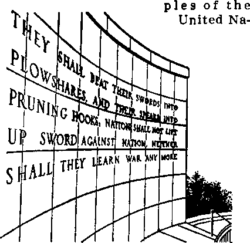

THE MISSION OF THIS JOURNAL
Nows fOurcas that are able to keep you awaue ro rne vital h«b**t*f eat Hmm must be unfettered by ceniorthlp and wlflih Interest*. "Awaxe! bdM fit! fetters. It recognizes facts, faces facts, is free to publish facts. Il Is rtbt bound by political ambitions or obligations; it if unhampered by advertisers whose toes must not be trodden on; It is unprejudiced by traditional creeds. This journal keeps Itself free that It may speak freely to you. But It does not abuse its freedom. It maintains integrity to truth.
“Awake!” uses the regular news channels, but Is not dependent on them. Its own correspondents are on all continents, in scores of nations. From the four corners of the earth their uncensored, on-the-scenes reports come to you through these columns. This journal's viewpoint Is not narrow, but is international, it is read In many nations, in many languages, by persons of al! ages. Through its pages many fields of knowledge pass in review—government, commerce, religion, history, geography, science, social conditions, natural wonders—why, its coverage is as broad as the earth and as high as the heavens.
“Awakel” pledges itself to righteous principles, to exposing hidden foes and subtle dangers, to championing freedom for all, to comforting mourners ond strengthening those disheartened by the failures of a delinquent world, reflecting lure hope for the establishment of a righteous New World.
Got acquainted with “Awakel” Keep awake by reading “Awakel"
Bll^»W»UP 11 * IB H
Published Simultaneously itt the United States by the WATCHTOWER BIBLE AND TRACT SOCIETY OF NEW YORK, INC. 117 Adams Street Brooklyti 1, N.Y., U.S.A.
and in Endland xt WATCH TOWHR BIBLE AND TRACT SOCIETY
Watch Tower House, The Ridgeway London N.W. 7, England
N. H. Knom, President Gbant Suitxb, Secretory
printing thia issue: 3,600,000 4d
“Astkei” h pukllit>S In th, fol lowing 23 langoigti: Ssmimontlrlr—Afrikaans Clwanla, Danish, Du tell, tin-glLsh, Finnish, French, German, Greek, Italian, Japanese, Norwegian, Portuguese, Spanish, Swedish, Tagalog, Zulu. Monthly—Ctbu-Vlsayan, Chinese, Ummao, Korean, Malayalam, Foliih, Tamil, Ukrainian.
Yearly siiliscrlpLkin rales ftffloas for semimonthly editions
America, U.B.T 117 Adama St., Brooklyn 1, N.Y. |L Australia, 11 Beresford Bd., BlratWld, N.S.W, 6/-Canada, lf>0 Brldgoland Ave., Tnronta LB, Ont. $1 England, Watch Tower Houne, The Ridgeway. London N.W. 7 ?/-
Kev Zealand, 631 New North Rd., Auckland, B W. 1 7/-
Bwth Afrits, Private Bag, Hlantlrfontein, Tvl, fOc Monthly editions cost half the ahore rates.
a copy (AufftrtHa, Sd; South Africa, S'/ac) Mmi litantes for eutarlptlona should ba vnt to liie office In your country. Otherwise Send jw remittance tq London. Nattea of capitation is nut at least two Imusi More subscription expires.
CHANGES OF ADDRESS should reach sb thirty I aye before year moving date. Give as your old and new address (If possible, n*r old address label). Write Watch Tower, Watch TnW Raise, The Ridgeway, London N.W. 7, England,
Entered as eeeond'-claM matter at Brooklyn, NY. Printed In England
The Bille translation med In "Awake!” li the New Wtrtfl Translation ef the Holy Soripterea, 1961 edition, Whan rrther translation an Mad the fellowlno symbol* will imw Milad the cftitlo&u
AS - Amertetn tilandard Venrion A? - An American Trinslatioti AV - Authorized Version (1611) Da - J. N. Darby's version
Dj/ - CaiboMe Dou ay Tendon ED - The Emphatic DiMlott JP - JewlaH PubliMllqii 8oe. Le - Isaac Leaser's vsrfltm
Mo - .lam re MoffatUe verdna Ro - J. B. RctherlunfB venton RS - Revised Standard Version Yp - Itobert Young's melon
Man's Quest for Peace
What Wag Hoped for in the
united Nations
How Is the U.N. Constructed?
Checking the Record of the U.N.
How the Nations View the U.N.
3
9
7
10
The United Nations—as Viewed
by the Clergy
Conflict with the Kingdom of God
Uniting All Men Under the
Kingdom of God
Where Will You Place Your Confidence?
Watching the World
16
20
WHAT blessings and enjoyment there are when people live together in peace! Yet, despite man’s efforts, time and time again the dove of peace has eluded his grasp, and he has plunged into the depths of war, bloodshed and destruction. A writer for the New York Times noted that "in 3,361 years of recorded history there have been 3,134 years of war and only 227 years of peace.” How sad it is that men have spent nearly fifteen years at war for every year they have lived in peace!
But times have changed. Now peace is absolutely necessary; war can no longer be tolerated. “The timeless message of ‘Peace on earth good will toward men’ is the only hope of mankind,” noted Canadian Prime Minister Diefenbaker. “The alternative of nuclear war,” he said, “will surely lead to the destruction of everything that we hold dear and the heritage that is ours.”
That the survival of civilization depends upon the obtaining of world peace began to dawn upon men when they emerged from the depths of the second world war. On June 19, 1945, following his return from the Allied victory in Europe, General Dwight D. Eisenhower gave a speech, in New York city, entitled “Peace an Abso-
lute Necessity.” In it he warned that
“civilization itself, in the face of another catastrophe such as we have faced in the last three years . . . would tremble, possibly decay and be destroyed.”
Less than three months later, on September 2, 1945, aboard the “U.S.S. Missouri” in Tokyo Bay, Japan formally surrendered, officially bringing World War II to a close. On that memorable occasion General Douglas MacArthur described in eloquent terms man’s need for peace. “A new era is upon us,” he observed. “Even the lesson of victory itself brings with it profound concern, both for our future security and the survival of civilization. . . .
“Men since the beginning of time have sought peace. Various methods through the ages have been attempted to devise an international process to prevent or settle disputes between nations. . . . Military alliances, balances of power, League of Nations all in turn failed, leaving the only path to be by the crucible of war. The utter destructiveness of war now blots out this alternative. We have had our last chance. If we do not now devise some greater and more equitable system Armageddon will be at our door.”
Statesmen recognize that a system that is to preserve the peace must be a world arrangement, one to wmcn me individual powers will surrender some degree of sovereignty, and whose decisions will be observed. In a speech before the House of Commons last year, former British prime minister Clement Attlee said that people need to recognize that “we live In a new world order. The old world order of absolute Independence of national states is passing away.” But thus far, what has been the success of the nations in working out difficulties among themselves on an international scale?
The year 1899 marked the first time that the nations had a general meeting to find a means to maintain peace. That was when twenty-six States assembled at The Hague Peace Conference. In 1907 the Second Peace Conference met at The Hague, and this time forty-four States—practically all the world’s independent nations— were represented. Less than a decade later, despite their peace efforts, these nations were embroiled in the first world war.
Following the war an international peace organization, the League of Nations, was established, and in 1920 fifty-four nations agreed “not to resort to war.” But in 1931 Japan moved into Manchuria and in 1935 Italy attacked Ethiopia to signal the breakdown of the League.
During the lifetime of the League of Nations scores of peace treaties were signed. By the Locarno Treaties of 1925, Germany covenanted with France, Belgium, Poland and Czechoslovakia, that they would “in no case attack or invade each other or resort to war against each other.” However, in 1938, Germany took over Czechoslovakia. Later, all went to war. An Italo-Ethiopian nonaggression pact was signed in 1928. In 1935 Italy attacked. In the Kellogg-Briand peace treaty of 1929, sixty-two nations renounced war. Almost all were at war within fifteen years, seven years after signing a nonaggression pact with Finland, Russia attacked in 1939. That same year Russia concluded a peace treaty with Latvia, Estonia and Lithuania, but within a year she annexed all three of those countries. The Hitler-Stalin pact of 1939 was broken two years after it was made, when Germany invaded. And so the record goes; man’s efforts at peace have been one long string of failures.
Roman Catholic bishop Fulton J. Sheen indicated the extent of the failure when he reported in the New York Times of April 20, 1953: “Those who put too ipuch trust in words alone should keep in mind that 4,500 treaties of peace were signed under League of Nations auspices between the first and second world wars. In the eleven months preceding the second World War, 211 treaties of peace were signed.”
The Answer?
Despite man’s failures in the past there is still the need for some agency that will unite the nations, for it is indeed a truism, *a house divided against itself will not stand.’ But where is there such an agency that can unite the peoples and bring peace? Just two years ago Britain’s Prime Minister Harold Macmillan expressed the most popular opinion, when he said: “We all feel in our hearts that as the world grows smaller it must, if it is to survive, of necessity become more united. But as each crisis underlines the difficulty of maintaining side by side the two principles of peace and justice, there are periods when all of us must have doubts. Nevertheless, whatever its difficulties and shortcomings the United Nations is the best—indeed the only —organization which we have available,”
Is the United Nations the answer in man's quest for peace? Consider the evidence on the following pages.
again began to think * - - *
in terms of a world organization that would be able to preserve the peace among
all mankind. These nations, as early as
January 1, 1942, had referred to themselves as the “United Nations,” and on October 30, 1943, the need for such an international organization was formally recognized. It was meant to be a vast improvement over the League of Nations, in size, in scope of activities and in effectiveness.
The United Nations had an ambitious program. It hoped to eradicate man’s basic enemies, such as hunger, disease, ignorance and injustice, and to this end many agencies were formed. Since an atmosphere of peace and goodwill is required to realize such cherished goals, the primary purpose of the United Nations, yes, what was hoped for in it, was the uniting of all peoples in peace, as good neighbors. How often the fond hopes expressed in the Charter of the U.N. have been upon the lips of people around the world!
“We the peo-
tions,” the preamble of the Charter affirms, are “determined to save succeeding generations from the scourge of war ... to reaffirm faith in fundamental human rights ... to promote social progress and better standards of life in larger freedom ... to practice tolerance and live together in peace with one another as good neighbors, and to unite our strength to maintain international peace and security.”
In the first of its 111 Articles, the Charter states that a primary purpose of the United Nations is “to develop friendly relations among nations ... and to take other appropriate measures to strengthen universal peace.” And in Article 26 it looks to “the establishment and maintenance of international peace and security with the least diversion for armaments of the world’s human and economic resources.”
Disarmament
In order to achieve the desired goal of peace the United Nations hoped to divert man’s efforts from the manufacture of destructive weapons of war to constructive implements of peace. This is evidenced by the inscription cut in a stone wall just across from the United Nations’ main building. Those words, taken from the Bible, though not credited to it, proclaim: “They shall beat their swords into plowshares, and their spears into pruning-hooks: nation shall not lift up sword against nation, neither shall they learn war any more.”—Isa. 2:4, AV.
Evidently leaders of the United Nations hoped that through their efforts this scripture would find fulfillment. Trygve Lie, former secretary-general or tne united Nations, and farmer president of the Gei> eral Assembly Herbert V. Evatt apparently hoped that other Scriptural promises concerning peace would also be fulfilled through the United Nations, for In a joint message on December 23, 1948, they said; "Peace on earth and good will to men must be made living realities. We must make them living realities through the United Nations.”—Luke 2:14.
After its birth in 1945, one of the United Nations’ first steps toward achieving its goal of peace was to establish a commission, as authorized by Article 11 of its Charter, to consider "the principles governing disarmament and the regulation of armaments.” As a result the Atomic Energy Commission was bom during the first session of the General Assembly In January of 1946, In February the following year the Security Council appointed a Commission for Conventional Armaments, whose work was to deal with "all armaments and armed forces except atomic weapons and weapons of mass destruction.” On January 11, 1952, during the sixth session of the General Assembly, these two commissions were replaced by the Disarmament Commission, Because the peace and security of the world depend upon it, it was hoped that disarmament would be , achieved through the United Nations.
Hopes of the Rulers
Right through the years world leaders have looked to the United Nations as the best, and, in fact, the only hope for peace. At the laying of the cornerstone for the permanent headquarters of the United Nations former United States president Truman, among other things, stated: "These are the most important buildings in the world, for they are the center of man’s hope for peace and a better life. This is the place where the nations of the world will work together to make that hope a reality.” And on another occasion he said: “The United Nations is our one hope to which we may look for a peaceful world.”
Across the ocean, King George VI of Great Britain was also optimistic, and when welcoming the U.N. delegates to London in 1946 he said: "It is for you to lay the foundation of a new world ... To-night we stand—and stand together—on the threshold of immense possibilities."
In the words of former United States president Eisenhower, the United Nations has become "the living sign of all people’s hope for peace.” The late Secretary-, General Dag Hammarskjold asserted that the United Nations “remains the principal source of hope of a world without fear.” And Kenneth B. Keating, a member of the United States Congress, hailed the United Nations as "the world’s best hope for peace.” Certainly such expressions by leaders of the world indicate that what they hoped for in the United Nations was exactly what its Charter looked to—all men living “together in peace with one another as good neighbors.”
Down to the present time world leaders still center their hopes for peace in the United Nations. When John F. Kennedy assumed office last year as the head of the most powerful nation in the Western world, he said in his inaugural address; “To that world assembly of sovereign states, the United Nations, our last best hope in an age where the instruments of war have far outpaced the instruments of peace, we renew our pledge of support.”
Has the United Nations lived up to the high hopes of its founders and the world’s heads of state? Is it, indeed, proving’ itself to be a source of well-founded hope for mankind? It would be well to consider the facts.
HOW IS THE
AS A world organization of 104 meipber nations, the United
U.N.
SECRETARIAT
U CUBITT
COUNCIL
GENERAL
ASSEMBLY
ECONOMIC
UNO SOL.:AL
COUNCIL
TRUSTEESHIP
COUNCIL
INTER NATION#
COURT
Sped t> Hied Agendat
Nations is more than a simple body of representatives who sit and discuss world problems. It is a complex organization made up of a great many parts, whose activities bring it in touch with common people the world over. Farmers in underdeveloped countries know it through FAO (Food and Agriculture Organization); refugees feel its presence through UNRWA (United Nations Relief and Works Agency); hungry and sick children see it represented in UNICEF (United Nations Children’s Fund); and educators have become acquainted with it through UNESCO (United Nations Educational, Scientific and Cultural Organization) . Because of these and its many other agencies the United Nations is no stranger to the people of the world.
Like the human body, the U.N. has nany organs with functions to perform. The six principal ones are the General Assembly, Security Council, Secretariat, International Court of Justice, Trusteeship Council, and the Economic and Social Council. Linked with one or more of these organs are the many agencies that bring the U.N. in touch with the common people.
Security Council
The Security Council is the principal organ charged with the responsibility to maintain international peace and security. Of its eleven members, five are permanent —the United States, Great Britain, France,
the Soviet Union and Nationalist China—and the other six are elected to terms of two years by
the General Assembly. Normally, it is the only organ that can make decisions that are considered to be binding upon all member nations. However, for any decision to be adopted it must have the approval of seven members, including the five permanent ones. Any one of these latter na-
tions can paralyze the Council’s power to act by exercising its right of veto.
When the Charter of the United Nations was drawn 'up it was assumed that there would be postwar unity among the major powers, who make up the permanent members of the Security Council. Even before the end of the second world war Stalin observed that the United Nations would not be effective if this essential condition was violated. Iron curtains, bamboo curtains, the armaments race, and threats and counter-threats have all testified to how miserably this essential condition has failed to be maintained. Well over a hundred times the major powers have stifled the Council’s capacity to act by using the veto; on June 22 this year Russia itself used it for the one-hundredth time. Disunity has virtually crippled the operation of the Security Council so that it can no longer carry out its purpose to maintain international peace and security.
On June 24, 1950, when North Korea invaded southward, this fact was impressed upon everyone concerned. At the time, Russia was boycotting the United Nations and was not present to veto a resolution in the Security Council to take action against the aggressor, North Korea. If Russia had been present to veto the resolution, there would have been no further recourse within the framework of the United Nations. If the United States had wanted to prevent South Korea from being snatched behind the Iron Curtain its only alternative would have been to launch war against North Korea without the sanction of the U.N. This action, however, might well have brought global war.
The General Assembly
The weakness of the United Nations, ■ caused by the disunity of the major powers, resulted in a shift of responsibility on security matters from the Security Council to the General Assembly. This latter organ is composed of all 104 member nations, each of which has one vote regardless of its size. Ordinarily, the General Assembly lacks the power to put decisions into action; it can only make recommendations to the members of the United Nations and to the Security Council and hope that they will be acted upon. However, following the outbreak of the Korean war an amendment was pushed through that enables the General Assembly to act on matters that threaten world peace if the Security Council is stalemated by the veto.
This “Uniting for Peace” resolution, adopted in November of 1950, provides that on the vote of any seven members of the Security Council, or a majority of the members of the United Nations, serious matters can be taken up within twenty-four hours before an emergency session of the General Assembly. This was done for the first time in 1956 when Britain and France vetoed the Security Council’s decision regarding the Suez crisis. Empowered to act under the “Uniting for Peace” procedure, the General Assembly, by an overwhelming majority, called upon Britain, France and Israel to withdraw, their forces from the area, which they did.
However, later in that same year, when Russia rolled into Hungary, and the “Uniting for Peace” resolution was again employed, the efforts of the General Assembly were a complete failure. Leslie Munro, who once served as president of the Assembly, explained: “If the more powerful members are unwilling to act, the United Nations can do nothing very effective." In this case the United States was afraid to take any action that might have precipitated a nuclear war.
Moreover, now that the nations within the U.N. are becoming more evenly divided between the East and the West it is doubtful whether the needed two-thirds majority vote could be obtained in the General Assembly on any issue that Russia or the United States did not favor. Thus, a similar dilemma faced in the Security Council is carried over to the General Assembly.
The Other Principal Organs
The Secretariat consists of the secretary-general and his staff, whose offices are located in the huge thirty-nine-story building overlooking the East River in New York city. This is the chief administrative office of the United Nations. During his five-year term, the secretary-general has many grave responsibilities to care for. He often plays a major role in trying to settle international differences that threaten world peace. The efforts of former Secretary-General Dag Hammar-skjold in this regard are well known.
Another main organ of the U.N. is the International Court of Justice, which meets in The Hague, Netherlands. It is the principal judicial body of the United Nations and it supplies the General Assembly and the Security Council with advisory opinions wnen asked for them. Member countries can refer disputes to this fifteen-man body for consideration by its learned judges. This was done recently in a dispute between Cambodia and Thailand over a ruined temple located on their joint border. With reluctance Thailand agreed to abide by the decision of the court. In the past some countries have refused to do so.
The Trusteeship Council is a principal U.N. organ that operates in conjunction with the Trusteeship System, which has to do with the supervision of territories placed under the care of the United Nations. It considers the advancement of trust territories and the problems associated with them.
The Economic and Social Council wrestles with problems that affect not only the trust territories but countries throughout the world. It works at developing economic resources, educating people, improving housing, modernizing transportation and improving health services. Assisting it are a number of agencies that bring it into close touch with the common people.
The Specialized Agencies
Some of the specialized agencies that are linked with the Economic and Social Council are familiar to the common people of the world because of the nature of their activities. The agency known as WHO fWorld Health Organization), for instance, is busy throughout the world solving health problems. It aids in training health workers, in controlling major diseases, improving sanitation and water supply, and so on. These are immediate benefits from the U.N. that the people can see.
Another well-known agency is FAO. Its objective is to raise nutritional levels and standards of living by helping to improve efficiency in producing and distributing food and agricultural products. Its aid is especially valuable to hardworking farmers who are struggling to eke out a living from poor soil with poor farming methods. Another subsidiary agency that helps the workingman is IDO (International Labor Organization). It seeks to improve labor conditions and living standards on an international scale. In an effort to do this it brings together government, labor and management for the purpose of drafting international labor conventions on wages, hours of work, minimum ages for employment, social insurance, and so forth.
Less developed countries can get financial help through the specialized agency known as IDA (International Development Association). It makes loans on flexible terms for important development projects. Closely related to it is the IFC (International Finance Corporation), which provides economic assistance to a country through the investment of capital in private enterprises in that country. In this manner it seeks to further the country’s economic development. But it is very difficult for a struggling country to develop economically, even with Investments of foreign capital, unless the people in the country are educated.
Overcoming the educational problem is the objective of UNESCO. According to its estimations, 45 percent of the world’s adults can neither read nor write, and more than 250 million children have never been to school. UNESCO is striving to do something for these people, and by its efforts it hopes to increase international understanding.
In theory the complex structure of the United Nations should function as a harmonious whole for the good of mankind, but in practice it is torn by dissension. Through its organs flows the spirit of disunity that seriously hampers it in fulfilling its primary function—the maintaining of world peace. This is a major factor disqualifying it as man’s hope for the future.
THE United Nations is seventeen years old.
While it Is not really an old organization, it is old enough for us to appraise fairly its degree of success in accomplishing its aims, namely, to maintain international peace and security by removing the threats to peace and by suppressing acts of aggression; develop friendly international relations based on equal rights for all peoples; cooperate in solving international problems of an economic, social and cultural nature; encourage respect for human rights and fundamental freedoms regardless of race, sex, language or religion; and to serve as a center of activity for the attainment of these goals.
First, in all fairness to the United Nations, some comment should be made on the gigantic obstacles that confronted the U.N. in its early stages and of their effects upon the growth and progress of the world organization. For example, the United Nations was projected on the assumption that the friendship achieved by the Soviet Union and the Western powers during World War II would continue indefinitely, that the veto would be used sparingly, that at the close of World War II the major nations would write peace treaties with the defeated nations, and that the U.N. would take over the peace thus made and maintain it.
But what happened ? Friendship between the East and the West dissolved shortly after the signing of the Charter and, instead of sparing use of the veto, there was an almost habitual use of the veto by the Soviet Union, which has cast some hundred vetoes as compared to seven by all the other powers in the same period. These facts caused the U.N. to face a series of crises that left it bewildered, because it was ill-prepared to cope with the problems resulting therefrom.
Then, too, instead of there being many peace treaties to maintain, only one peace treaty was made and that was with Italy. In 1952 another treaty was signed with Japan, but Russia refused to honor it with her signature. No others materialized.
Another jolt was that the China of the U.N. Security Council was forced off the mainland. The new China in power turned out to be a Communist China.
Still another shock was the exploding of the atomic bomb shortly after the signing of the Charter in San Francisco. This explosion profoundly changed the security calculations upon which the Charter was based.
Therefore, only in the light of these and other events can we fully appreciate and more accurately evaluate the past seventeen-year record of the United Nations. What has its record been?
Achievements? Yea, But—
There have been United Nations achievements, but there have also been failures. On at least six occasions it is claimed that the U.N.’s actions have “reduced the threat of World War III,” which is a commendable record in itself, if true. Kashmir, Palestine, Indonesia, Iran, Greece, Syria, Lebanon, Berlin, Suez Canal and the Congo have all been trouble spots. But in each instance the United Nations Is credited to some degree with maneuvering disputing powers away from the battlefield to the conference room, where, by means, of debate, power and sometimes reason, war has been averted.
But what kind of peace has it been? And has the U.N, been the maintainer of peace and security as generally believed? What do the facts show?
Less than a year after the United Nations Charter took effect, the U.N, prevailed on the Soviet Union to remove its troops from northern Iran, where a tense situation had developed. On March 24, 1946, five months after the U.N. resolution, the Soviet Union withdrew its forces from Iran. This was hailed as a United Nations victory for peace, law and order. However, according to Professor Alfred J. Hotz at Western Reserve University, “the actual withdrawal of Soviet troops was achieved by Western policies outside the United Nations” and not necessarily because of the United Nations,
Another United Nations peace effort was demonstrated when it ordered a halt to the full-scale war that raged between the Arabs and the Israelis. In 1949 separate armistices were signed and further outbreak of general hostilities was prevented. But there is no peace. The present situation is tense, with opposing armies facing each other across a patroled no-man’s-land.
In 1956 Israel invaded Egypt’s Sinai peninsula. When Egypt rejected a demand for a cease-fire made by France and Great Britain, the two nations bombed Egypt by air on October 31, 1956. The U.N. then stepped in and ordered a cease-fire, which was honored on November 7, 1956.
But please note what nations were Involved in this incident—none other than France and Great Britain, permanent members of the U.N. Security Council, nations entrusted with keeping the peace! On other occasions, two other permanent members of the Security Council, namely, the United States and the Soviet Union, were also guilty of similar fractions of law and order. The United States became involved with the violent attempt to invade Cuba, and the Soviet Union employed its forces in Hungary. Nationalist China alone among the five-power permanent members of the Security Council remained relatively peaceful, but not without restraint.
Another example of United Nations peace is in Kashmir. A United Nations commission brought about a cease-fire agreement on January 1, 1949. The fighting between India and Pakistan over Kashmir stopped. The commission aiso recommended a plebiscite, which to date has not been held. Millions of Moslems have not been permitted to vote on whether they desire to be linked with Pakistan, because of the U.N. babble and India’s doubletalk. Here, too, troops continue to face each other across the cease-fire line. True, there is no war, but neither is there peace.
On June 25, 1950, the North Korean armies attacked South Korea. The United Nations stepped in to repel the aggressors. After three years of bloody fighting, a truce was finally worked out. The U.N, settled for a split Korea, which, admittedly, is acceptable to no one, and least of all the Korean people. As a result, Korea remains an explosive powder keg, a threat to the peace of the whole world.
The U.N. tried its hand at preserving the independence and neutrality of Hungary after the Budapest revolt of 1956. It proved “a complete failure.” Its action In the Congo is still debatable. And many are those who charge that the world’s organization’s behavior toward India’s seizure of Goa was disgraceful and scandalous.
The U.N. member nations promised at San Francisco to “practice tolerance and live together in peace with one another as good neighbors,” This promise has not been kept. Some of their actions have been all but neighborly. According to the Charter, the U.N. is to be “a center for harmonizing the actions of nations.” Has it been that? Have the Moslems and the Hindus in Kashmir, the Arabs and the Israelis tn the Middle East, the Portuguese and the Indians, the British and the Egyptians, the Russians and the Americans, been drawn closer together or made friendlier as a result of U.N. actions? The answer is altogether too obvious for comment.
Perhaps nowhere has the U.N. proved a greater failure than in the field of disarmament. Where is the promised system for the regulation of armaments? There is none. The U.N. founders considered arms control the first step to world peace. Still, after seventeen years and countless committees and conferences, that first step has yet to be taken. And what could testify more eloquently to U.N. failure than the fact that ‘the world in its overall arms race spends $14,000,000 an hour,’ according to a recent Associated Press report Yet President J. F. Kennedy, on February 16, 1961, called the United Nations “our best hope and perhaps only hope for world peace.”
Other Achievements
Weapons alone do not breed war. Ignorance and oppression, famine and disease, however, if left unsolved, do provide a climate in which revolutions and wars are fostered. The U.N. has tried to attack these problems through its specialized agencies. For example, it has, since 1945, helped some 700 million people to get their own governments. But self-government does not always mean freedom or equal rights. Look at Spain, Portugal and the many other lands where dictators reign. The U.N. has been powerless to act in behalf of these people.
WHO, the World Health Organization, has helped to free over 280,000,000 people from the danger of malaria, brought a cholera epidemic under control in Egypt, has fought typhus in Afghanistan, infantile paralysis in India, yellow fever in South America and yaws in Haiti, But WHO also has its troubles. It is ailing for a lack of finances.
UNESCO has been trying to build a practical program in education, science and the humanities. It is providing the advice of experts in Africa and Latin America, helping nations to expand their school systems, train teachers and publish new textbooks. However, it is also accused of spreading political propaganda. Some view it with suspicion.
UNICEF, in 1960, aided 55,000,000 mothers and children with food, medical supplies and other necessities. But this is hardly skimming the surface, for there are 550,000,000 children alone who need attention, not only in one, but in many ways.
IRO, the International Refugee Organization, has aided 1,555,000 refugees with medical care, schooling and vocational training. It has resettled over 926,000 in new places and returned 72,000 to their homeland; 224,000 still need assistance.
FAO, the Food and Agriculture Organization, has introduced hybrid corn and other improved seeds, livestock, farm machinery and fertilizer in various places in an effort to increase food production and quality.
Achievements? Yes! But how much is all of this worth when the nations have ready for instant use enough weapons to destroy every human creature on earth many times over?
How the nations
wewh
7 9 o
X#: <•' -7'
5*
ISAPPOINT-
MENT over the
United Nations as an instrument for peace is steadily increasing. It has repeatedly been charged with failure to live up to the objectives of its Charter, thus shattering the trust that was initially placed in it when it was formed seventeen years ago. Britain’s foreign secretary, Lord Home, expressed this disappointment after the United Nations failed to censure India for her armed invasion of Goa.
Reporting on Lord Home’s statement, England’s Daily Telegraph and Morning Post of December 29, 1961, said: “Britain has been placed in an ‘appalling dilemma* because of a serious falling away from the principles of the United Nations Charter, said the Earl of Home, Foreign Secretary, at a United Nations Association meeting at Berwick-on-Tweed last night. He spoke of ‘a crisis of confidence.’ All our instincts and interests combined to urge support for the kind of United Nations for which the founders drew up the charter. ‘The question which many sober and responsible observers of its practice are asking is whether we can continue to do so, and whether the United Nations of the authors of the charter has had its day.’
“Lord Home described India’s use of force against Goa, whatever the provocations or excuses, as ‘a direct breach of the charter and international law.’ He added: ’When we have reached the stage when a large part of the organisation which is dedicated to peace openly condones aggression; when an
organisation which was founded to sustain law and order encourages policies which must endanger it or when a refusal by many to carry their share of the cost brings a prospect of power without responsibility, it is an understatement to say there is cause for anxiety.’ ”
This anxiety over the direction that the United Nations is taking was echoed by The Northern News of Northern Rhodesia in its issue of June 14, 1962. After condemning the United Nations for deciding to debate on conditions in Southern Rhodesia, it said: “There have, as we all know, been other occasions on which the United Nations has veered from the course set by its Charter. It waged war in Katanga, for instance, and it turned a blind eye to India’s act of aggression against Goa, not to mention Russian brutality in Budapest.”
As might be expected after the seizure of the Portuguese territory of Goa, the opinion Prime Minister Salazar of Portugal expressed of the United Nations was extremely low. “On the one hand,” he remarked, “our presence in the organization could hardly be understood if we were not ready to have recourse to it; on the other, the way in which it was bound to act would be one further revealing proof that, as it at present functions, it is not only useless but is actively harmful-” Canada’s The Globe and Mail of January 5, 1962, quotes him as saying: “I do not yet know whether we shall be the first country to abandon the United Nations, but we shall surely be among the first,”
Ineffective
Repeatedly the United Nations has been bypassed in favor of force. Some of its own members have ignored the provision of its Charter and have used military force for promoting national interests. Commenting on this, Sir Raymond Huish of Australia stated, as reported by The Courier-Mail of Brisbane in its issue of March 12,1962: "The U.N. was formed in 1945 by 51 nations who pledged themselves never to use force and never to use aggression. But spotlight Hungary, Tibet, East Germany and Indo-China, and it is seen nations who signed the original charter in 1945 have approved force and aggression. Russia had condoned force and aggression; had added 700,000,000 people to its Empire and swollen its land Empire by 5,000,000 square miles since 1945, but it had not been attacked for this in the U.N.”
The big powers are reluctant to submit their problems to this international body, especially since voting control of the General Assembly has shifted to the tiny countries that represent only a small percentage of the world’s population. Of the 104 nations in the United Nations, about 50 are the Afro-Asian nations. When the dissenting vote of only one-third of the membership can block an important resolution, with each country having one vote, the big nations that pay most of the expenses and represent most of the people are not willing to let the vote of small and often inexperienced nations decide their relations.
Commenting on the voting problem, the UJ3. News <£ World Report of April 16, 1962, stated; “Is there something basically wrong with an organization in which the vote of a nation with a population of less than 500,000—with no military or economic power—carries as much weight as the vote of the United States, which has 185 million people, with vast economic and military power?” With the voting advantage that the small nations have over the big ones because of their numbers, the big powers prefer to handle their problems privately rather than go to the United Nations.
Pointing out that the big nations have ignored the U.N. in this respect, Canada’s The Globe and Mail said: “Summit meetings, conferences of Foreign Ministers, disarmament talks and the like, have been held outside the United Nations, and if we ' have enjoyed peace, it has been more due to a balance of terror than to any effective rule of law and order.”
In a speech in London, L. S. Amery, a former statesman, flatly called the United Nations a sham. "The United Nations, I fear, is a sham, and a dangerous sham because it encourages the illusion that there is a world authority which can take action in preserving peace.”
Abandonment
The failure of the U.N. to secure world peace has moved some politicians to consider seriously its abandonment In the United States, Senator J. W- Fulbright, chairman of the Senate Foreign Relations Committee, advocated that the United States look elsewhere for a unifying force. “It is elear,” he said, “that the United Nations , . . has fallen far short of the hopes which attended its creation; we must look elsewhere for a system that can unify the forces of freedom effectively.”
An increasing number of United States senators are beginning to think seriously about the advisability of the United States’ staying in the U.N.,. especially when so many of the nations are failing to bear their load of the financial burden. Some of the questions they are considering were propounded by Life magazine in its issue of January 5,1962. It asked: “If the U.N. cannot prevent or even censure aggression, what is its purpose? Is the U.N. Useless? Is it time to cut our losses and make a spiritual, if not physical withdrawal from the'U.N.?”
In an outspoken article that appeared in the British newspaper The Sunday Express of April 9, I960, the Tory M.P. for Yarmouth, Anthony Fell, said: “The time has come for us to ask ourselves whether we should not leave UNO altogether. For we must not delude ourselves or the world any longer that UNO has any useful purpose to serve, either in the advancement of democracy and freedom or in the prevention of war. . . . The United Nations is as dead as the old League.” This view is also held by Charles de Gaulle of France,
Only Hope
Despite its many weaknesses and fallings, there are many persons who continue to advocate the United Nations as man’s only hope for peace. This was the opinion of Alex Quaison-Sackey, Ambassador of Ghana to the United Nations. In 1960 he called the U.N. “the only hope in the world today for the preservation of peace. For us in Africa the United Nations is a great world forum where we feel that all differences can be ironed out.” In the same year King Hussein of Jordan called the United Nations “the only hope of peace and freedom.” The present United States delegate to the U.N., Adlai Stevenson, stated: “The United Nations is not dead. It is alive with the spirit of the age to come.”
COMING IN THE NEXT ISSUE
• Are We Vic time of Fate?
9 Did Men Liva a Million Years Ago?
• Big Bualneas in Crime. ■
• Fathers, Enjoy Your Children.
• “Compac” Linka Australia and New Zealand.
Acknowledging its defects, Ths Auckland Star of New Zealand nonetheless advocated the U.N. as a force for peace. In its issue of January 17,1962, it said: “Britain and America, cannot afford to desert or get tough with the U.N. With al] its shortcomings, it has been a force making for peace. Its weakening today would increase the already powerful forces making for world war.” The same opinion was expressed by The Observer of London in its issue of September 17, 1961. “In the last resort, the U.N. can be only what its member-countries choose to make it. At present, it is weak, inadequate and insolvent. But it is still the world’s best hope for getting out of our intolerably dangerous jungle of thermo-nuclear sovereign States and for creating the beginnings of a civilised international community.”
Viewpoints toward the United Nations differ, often depending upon whether a nation has been helped or feels that it has been hurt by the actions or inaction of the U.N. Highlighting the difficulty, the Else-viers Weekblad of the Netherlands said: “If those in the circles of the United Nations do not realize that peace is not a matter in itself, but is the result of righteousness, then we had better give up our second effort in this century to create an organization for peoples of equality.”
Not all are ready to throw it over yet. They still hold to it, at least in name, but their stockpiling of weapons for war is unmistakable evidence that they lack confidence in its ability to guarantee world peace.
TSE attitude manifest by the politicians toward their League of Nations and now toward the United Nations is not surprising to most people. But what really commands our attention is the attitude of the clergy of Christendom toward these organizations.
After World War I the churches went all out in their support of the League of Nations. Say Hill and Lund in their book If the Churches Want World Peace: “Except for the Southern Baptists and the Lutheran groups, all of the major Protestant churches of America announced through their respective national organizations their determination to support the Wilsonian project; they sent words of encouragement to President Wilson and a shower of telegrams to the Senate Foreign Relations Committee and to individual senators. Typical of their stand was the statement adopted by the Board of Bishops of the Methodist Episcopal Church in 1919 that ‘the League of Nations is an advance toward the period prophesied by the Hebrew prophet when men should not “learn war any more.” ’ . . . The Executive Committee of the Federal Council of Churches cabled President Wilson at Paris that the League is ‘the political expression of the Kingdom of God on earth.’ ”
In a Declaration the Federal Council of Churches of Christ in America called upon all Christians and upon ail believers in God and lovers of man to support the League, and said: The Church “can give a powerful sanction by imparting to the new international order something of the prophetic glory of the Kingdom of God. . . . The League of Nations is rooted in the Gospel. Like the Gospel, its objective is ‘peace on earth, good-will toward men.’ ”
But the League did not endure. It did not preserve peace on earth. It withered and died along with the hopes of the clergy who so fervently supported it.
The Clergy and the United Nations
After World War II the clergy once again came boldly forward in support of a political scheme for world peace. Dr. Walter Van Kirk of the National Council of Churches, in his booklet The Churches and the United Nations, states: “In response to an invitation from the State Department, representatives of the churches, Protestant and Eastern Orthodox, Roman Catholic and Jewish, served as consultants to the United Nations delegation. Through them the churches demanded that a Charter be drafted that would bring peace to a war weary world. When the Charter was signed there was great rejoicing. The prayers of the faithful had been answered. Church bells were rung. Christians crowded into their churches.... Said the Federal Council of Churches; ‘We are grateful to God that the prayers of the Christian peoples of the world for the success of the San Francisco Conference have been answered with agreement to establish the United Nations? This note of thanksgiving was echoed by the major religious bodies of the country?’
"" Regarding religious support of the United Nations, writers Hill and Lund have this to say: “With unimpeachable consistency the churches have upheld the cause of the United Nations and what it stands for from its early formative period down to the present time. ... At the San Francisco Conference of 1945, where the United Nations Charter took on its final form, there were among the forty-two private organizations represented by unofficial observers, several of a religious nature. Most conspicuous among them were the Federal Council of Churches, the Church Peace Union, the Catholic Association for International Peace, the National Catholic Welfare Conference, and two Jewish agencies.”
After the Charter was signed the clergy immediately began to advocate strong backing by the people and by the government for the United Nations and its work. Resolutions to that effect were drawn up by church bodies and adopted. For example, “a Protestant Episcopal meeting at San Francisco in October, 1949, adopted a resolution calling upon the government to make a maximum use of the organization; again, during the Middle Eastern and Hungarian crises in 1956, the House of Bishops urged that ‘with all its inadequacies and imperfections, we believe that Christians are called upon to give their support to the United Nations, the only semblance of world government we possess? In like manner the f Amsterdam Assembly of the World Council in 1948 declared that the United Nations ‘deserves the support of Christians? In 1953 the Fourth National Study Conference of the Churches at Cleveland made a similar plea.”
In 1954, at the closing session of the 147th annual meeting of the Baptist Missionary Convention of New York State, a resolution was adopted that said: “In this day of world crisis and international tension we would reaffirm our faith in the United Nations as the collective expression of the will to peace throughout the world and would undergird its efforts with prayer and the intelligent support of its worthy aims.” At the Tenth Baptist Congress in Rio de Janeiro, Brazil, held in 1960, a declaration was made that stated: “We recognize the importance of the United Nations Organization and we seek to uphold its efforts to examine the solution to the complex problems of the world?'
In the 1958 report of the Lambeth Conference, a conference of the bishops of the worldwide Anglican communion, a similar statement in support of the United Nations is made, namely: “The Conference affirms the need for strengthening the United Nations and to this end . . , recommends that all Church people be asked to pray for God’s blessing upon the officers and declared purposes of the United Nations.”
The churches strongly approved and lauded the United Nations for its “prompt and vigorous action” in Korea, The World Council of Churches, on July 26, 1950, reportedly stated: “We commend the United Nations, an instrument of world order, for its prompt decision to meet this aggression and for authorizing a police measure which every member should support," On August 2, 1950, the American Federal Council of Churches did the same. The record to date leaves no doubt that the churches are strong backers of the United Nations.
Catholic View of the U.N.
Setting an example for Christendom’s attitude toward the United Nations, Pope Pius XU appealed to its member nations to “devote their sternest efforts to solving the problems of permanent peace and security at the next General Assembly,” and said: “If ever an assembly of men, gathered at a critical crossroad in history, needed the help of prayer, it is this Assembly of the United Nations,” (New York Times, September 2,1948) Pope Pius XU reportedly stated to the minister of San Salvador, in 1947, that ‘no sincere worker for peace can afford to renounce the world forum of the U.N.’
Regarding Pope John XXIII and the United Nations, editor John B. Sheerin, C.S.P., of the Catholic World said: "There is no question as to his attitude. He himself was Vatican observer to UNESCO at Paris and only recently he publicly thanked God that the U.N. Food and Agricultural Organization had come into existence.” Every year when the General Assembly convenes in New York a special mass is held in St. Patrick’s cathedral in honor of the United Nations. Monsignor Thomas A, Donnellan said (to quote the report in the New York Times, October 31,1955): “Despite ‘imperfections, vetoes and obstructionist tactics’ the United Nations was, ‘humanly speaking, the last, best hope for international peace.’ Monsignor Donnellan is vice chancellor of the Roman Catholic Archdiocese of New York.’’ Roman Catholic archbishop Robert E. Lucey of San Antonio, Texas, called the United Nations “our last hope for peace in the world.” To illustrate to what extent Roman Catholic sentiment has gone toward the United Nations, a booklet has been published entitled “Mary of the United States, Mother of the United Nations,” written by a Jesuit, Daniel A. Lord, and carrying the imprimatur, Nihil obstat and other endorsements of the Roman Catholic Hierarchy,
Protestant View of the U.N.
Protestant clergymen also bubble over with praise for the United Nations. Presbyterian minister Dr. J. S, Bonnell took his text from Jesus’ sermon on the mount, “Blessed are the peacemakers,” and said to the many United Nations delegates in his audience: “Blessed are you men of the United Nations, who devote your life to the understanding of the problems of other people.” The New York Times report, April 21, 1952, closed with a paragraph stating that the minister held that “the peoples of the world must realize that the United Nations is the supreme hope for world peace.”
Methodist minister Ralph W. Sockman, New York city, said that the United Nations offered the “best hope of peace,” but added: “With all its organization and its new home now arising in our city, the United Nations lacks a soul—and this is what religion through the churches must give it.” Bishop Nichols of the African Methodist Episcopal Church called upon “the entire membership of the First Episcopal District to give their utmost backing to the cause of Democracy and the United Nations.” A Christian’s Primer of the United Nations, published by the Methodist Church, says: “The world must have Christians with vision to see many of the activities of the United Nations as a means of accomplishing the things that Christianity has tried to do for centuries. If the United Nations can find enough Christians with that conviction to support it, it cannot fail.”
In the small book Social Statements of the United Lutheran Church in America 1918-196%, produced by The Board of Social Missions of the United Lutheran Church in America, these statements appear: “We believe that at the governmental level the best hope for peace lies In strengthening the United Nations as an instrument of collective security and of creative development in world health, agricultural and industrial life, and moral and political strength.” “Christian people have a great opportunity and responsibility to follow Christ’s command to help one another by supporting the United Nations’ program of technical assistance.” “The Christian Ought: . . . Recognize the United Nations as our existing instrument for world order. . . . We should seek, by every possible means, to uphold its hands in the hope that it may become a more effective world organization guided by Christian principles.”
Dr. Thomas L. Crosby, minister of the Central Union Church in Honolulu, expressed like sentiments when he said: “It should be evident to all today that peace depends upon the United Nations.”
Jewish View of the United Nations
What of the religious leaders of Judaism? “Rabbi” David B. Kahane at the East Fifty-first Street Synagogue in New York declared: “There is a very direct relation between religion and the United Nations. Members of all religious creeds must accept the promotion of world order through the United Nations as a personal responsibility and must seek to realize their religious ideals through this world organization.”
“Senior Rabbi” Julius Mark of Temple Emanu-El advocated reliance on the United Nations, according to a New York Times report for November 26, 1961. Said the Times: “A plea for renewed confidence in the United Nations as the most effective force to achieve world peace was voiced yesterday in a sermon by the Rev. Julius Mark,” Along a similar vein, Dr. Leo Baeck, president of the World Union for Progressive Judaism, told a congregation of refugees that without religious faith there can be no successful United Nations.
Other Views
This by no means exhausts the statements by clergymen who have come out in favor of the United Nations, neither do we mean to infer that all clergymen support the world organization, for a number do not.
Swiss theologian Karl Barth said: The world organization “cannot make a real peace, but only an approach.” “The real peace will be made by God himself, in the end of all things, and not by man,” Dr. Barth called the United Nations “a sign of hope,” but added the caution: “Let us hope it is a true sign. ... Neither faith, nor love, nor hope will do the real thing,” he said. “All these activities can only be signs pointing to God’s world.” After Dr. Barth toured the United Nations, he looked up at the imposing glass structure and said: “I hope that this building will not have the fate of the tower of Babylon.”
Yet there appears to be no question that the major church bodies of Christendom have come out in full support of the League of Nations and now the United Nations. They look to politicians to take the lead. When the politicians held forth a League of Nations, the clergy were there to support it. The politicians proposed a United Nations organization; again the clergy rally to the side of the political leaders and muster support for it. Dr. Walter Van Kirk of the National Council of Churches asks: Is the United Nations “deserving of the continuing support of the churches”? His answer: “Yes, a thousand times, yes. Why? Simply because the United Nations, on the political level, is mankind’s best hope for peace.”
Is that your view? Is that the attitude that is recommended, by the Bible, the Word of God?
MAN is dependent upon God. It is a wise person who takes that into consideration in all his undertakings.
Such a person does not assume that because something appears to be good it must have God’s approval. He does not foolishly conclude that, if the majority support a scheme, it must be right, or that, if his friends condemn it, it is wrong. Wisely, he seeks guidance from the Word of God.
There his attention is focused on the kingdom of the heavens, the kingdom of God. The Son of God, Jesus Christ, preached about it, and he taught his followers to pray for it. (Matt. 4:17; 6:9,10) That kingdom cannot fail, because God, Who is its Creator, is Almighty. It is also evident that nothing that is in conflict with that kingdom can meet with lasting success. Where does the United Nations stand in this regard?
To determine the answer to this question, we must first of all determine where the nations of this world stand in relation to God, because it is these nations that are members of the United Nations. The Bible makes it clear that the nations of this world do not enjoy a favorable standing with God. Pointedly it says: “The whole world is lying in the power of the wicked one.” (1 John 5:19) Who is this wicked one?
He is the one referred to in the Scriptures at 2 Corinthians 4:4, where it says: “The god of this system of things has blinded the minds of the unbelievers, that the illumination of the glorious good news about the Christ, who is the image of God, might not shine through.” Take note that
THE KINGDOM OF GOD
the one here referred to as “the god of this system of things” is not the God in whose image Christ is made. He is not the true God. He blinds the minds of men to the truth. In this he is misleading men. He is none other than the one identified at Revelation 12:9 as “the one called Devil and Satan, who is misleading the entire inhabited earth.”
The fact that the “whole world,” which lies in his power, refers to all the nations regardless of their political ideology is confirmed for us by an incident that is recorded at Luke 4:1-8. Here it tells us that while Jesus was a man on earth he was subjected to temptation by the Devil. The Devil “brought him up and showed him all the kingdoms of the inhabited earth in an instant of time; and the Devil said to him: ‘I will give you all this authority and the glory of them, because it has been delivered to me, and to whomever I wish I give it. You, therefore, if you do an act of worship before me, it will all be yours.’ ” Jesus decisively rejected the offer, al though not denying that the Devil could give such worldly authority. This helps us to understand what Jesus meant when he said: “The ruler of the world is coming. And he has no hold on me.”—John 14:30.
So it becomes evident that there is a great difference between the kingdoms of this world, all of which lie in the power of the wicked one, and the kingdom of God. This fact is emphasized by Jesus’ statement to a political ruler of his day: “My kingdom is no part of this world.” (John 18:36) How, then, do the kingdoms of this world stand with God?
The conclusion is inescapable that the nations stand in conflict with God and his kingdom. For that reason the disciple James wrote under divine inspiration: “Adulteresses, do you not know that the friendship with the world is enmity with God? 'Whoever, therefore, wants to be a friend of the world is constituting himself an enemy of God.” (Jas. 4:4) What, then, of the United Nations?
It is made up of the nations of this world. It is prominent among the nations. It seeks to be on friendly relations with all the nations. Its very existence is dependent on such friendship. Yet this friendship with the world makes it the enemy of God!
Symbolized in Revelation
This prominent role of the United Nations in the affairs of the governments of the world is well indicated when it is described in symbolic language as an "image.” An image of what? The Holy Scriptures, at Revelation 13:15, respond: “The image of the wild beast.” But in what way can it be said that the United Nations is an "image," and what is the "wild beast” of which it is an image?
Open your Bible to Revelation 12:9 and you will see that the Devil is described as “the great dragon.” In the next chapter, verses 1, 2, we are told that this dragon, the Devil, gave power and a throne and great authority to a "wild beast.” What is that “wild beast”? Well, what is it that we have learned lies in the power of Satan, the wicked one? The whole world. What is it over which Satan holds authority and that he offered to Jesus? All the kingdoms of the world. In harmony with this Revelation 13:7 says concerning the "wild beast” that “authority was given it over every tribe and people and tongue and nation,” Therefore this “wild beast,” which comes up out of the “sea” of unrighteous mankind, must represent the Devil’s visible organization, made up of all the kingdoms of the world.—Isa. 57:20; Matt. 4: 8,9.
In this same thirteenth chapter of Rev lation another beast appears on the seen Its one head has two horns. It performs signs, demonstrating great power in the sight of mankind, and then recommends making an image of the seven-headed wild beast for worship. (Rev. 13:11-15) What does this two-homed beast represent?
It can well be understood in the light of Daniel chapter 8, where it uses a two-homed ram to symbolize the dual power of Media and Persia. So, too, in modem times Britain and America, sharing a similar heritage and the same language, have been closely allied in world affairs, so much so that when any nation deals with one of them it knows it has to take into consideration the reactions of the other. Fittingly, therefore, it is symbolized as a two-horned beast. It was this Anglo-American combine that took the lead in recommending to the nations first the League of Nations and then its successor, the United Nations. It is these peace agencies that are described in the Bible as the “image of the wild beast.” How so?
Just as an image is a likeness of something else, so the international peace organization is a reflection of the kingdoms of the world, at present including 104 of them in its own makeup. It is also an image in that mankind’s leaders, yes, even clergymen who claim to represent God and his kingdom, extol the United Nations and set it up for adoration and praise on the part of the people.
In view of the fact that this organization is described as an image or reflection of Satan's entire visible organization, it should not surprise us to find that it is depicted in the seventeenth chapter of Revelation as a scarlet-colored wild beast, with seven heads and ten horns, thus bearing a remarkable likeness to the original seven-headed wild beast. In the Biblical comments on this scarlet-colored wild beast there are certain facts that are particularly helpful in fixing its identity. For example, we are told that the seven heads of this beast represent seven kings, seven governments, corresponding to the seven world powers from the standpoint of Bible history. The scarlet-colored beast, the inspired prophecy shows, springs from those seven. So it was that, following World War I, the governments of the world, including the remnants of those world powers, gathered together to form the League of Nations to secure the world peace. But, says the apostle John, “the wild beast that you saw was, but is not, and yet is about to ascend out of the abyss, and it is to go off into destruction.” (Rev. 17:8, 11) So it is that the world’s peace agency did come on the scene beginning in 1920, but went out of existence during World War II, and then came to life as the United Nations in 1945. The question is, How does this peace “beast" stand with God?
Revelation 17:3 answers that it is “full of blasphemous names.” How so? It has irreverently been labeled by the clergy of Christendom as “the political expression of the Kingdom of God on earth,” the means by which the goals of Christianity will be achieved, and “the final guardian of peace in the world.” It should also be noted that the statesmen in the United Nations do nothing to discourage the use of such labels that show irreverence toward God by claiming for men prerogatives that He has reserved for Himself. To the contrary, they declare that the United Nations Is the best means available for bringing peace to mankind, and In this connection they have assumed a religious role for the U.N. by inscribing in front of their world headquarters words taken from the Holy Bible, declaring: “They shall beat their swords into plowshares, and their spears into prunlnghooks: nation shall not lift up sword against nation, neither shall they learn war any more.” (Isa. 2: 4, AV) Thus they proclaim to the world that they will achieve what God declares can come to pass only 'when He judges among the nations.1 In the light of these facts it la not difficult to understand why the United Nations, while apparently working for a laudable purpose, will “go off into destruction.” It stands in conflict with God and his kingdom.’
In spite of the overwhelming evidence from the Bible and from modem history testifying to the fact that the United Nations is no honor to God, one may find this fact difficult to accept. After all, statesmen have spoken highly of it, clergymen have lauded it and urged the people to pray for it. But is it not true that the U.N. is made up of nations whose people worship many gods? Some bow before idols; others indulge in witchcraft. Yet other member nations contend that there is no God. Why, even the present secretary-general of the United Nations does not profess to worship the God of the Bible; he is a Buddhist. How could an organization that is made up of nations that show utter disregard for the worship of the true God, who says, “You must not have any other gods against my face,” possibly be one in which a true Christian would want to place his confidence?—Ex. 20:3.
Another reason why many find it difficult to accept the Biblical view of this world peace organization is the fact that it has brought benefits to many peoples through its various agencies. Certainly the United Nations is not anti-God because it educates people through UNESCO, or because it works for the betterment of health throughout the world through WHO, or because it provides help in matters of agriculture through FAO. Not at all! But when the United Nations in its religious garb takes the place of God’s kingdom in the hearts of men, is this not disgusting in God’s sight?
Effect of Clergy Support
What men of the world think of the United Nations should not determine the attitude that Christians ought to take toward it, especially since the Lord Jesus declared: “What is lofty among men is a disgusting thing in God’s sight.” (Luke 16:15) Jesus Christ himself, foretelling the destruction of Jerusalem and using it as a pattern of what would happen at this time of the end of the wicked system of things, warned of a “disgusting thing that causes desolation.” He said: “When you catch sight of the disgusting thing that causes desolation, as spoken of through Daniel the prophet, standing in a holy place, (let the reader use discernment,) then let those in Judea begin fleeing to the mountains.. .. for then there will be great tribulation such as has not occurred since the world’s beginning until now, no, nor will occur again.”—Matt. 24: 15, 16, 21.
Shortly after he stated this, a disgusting thing did occur right there in Jerusalem. The Jewish clergy rejected Jehovah’s king, Jesus Christ, and demanded that he be impaled. While outwardly professing faith in the prophecies concerning the kingdom of God and the rulership of his Messiah, they disgustingly rejected God’s own Son and allied themselves with the Roman government. “We have no king but Caesar,” they shouted.—John 19:15.
It must be borne in mind, however, that Jesus was only using what was to happen there in Jerusalem as a pattern of what would occur in this time of the end. And so it is that the clergy of Christendom have followed in the footsteps of their Jewish counterpart. While outwardly professing faith in the kingdom of God, they have allied themselves in triendship with the world and so made themselves His enemies. Though offering formal prayers for the kingdom of Gera, they shout to the world their support of the United Nations. They give lip service to God but active support to the United Nations.
As if God had nothing to offer, the Executive Committee of the Commission of the Churches on International Affairs, declared: “The United Nations offers the best means for coordinating the activities of the nations for human welfare.” And, in effect, urging Christians to ignore the counsel of Christ that they must remain separate from the world and shoving aside the plain statement that his kingdom is no part of the world, it went on to say: “The United Nations needs and deserves the discerning and active support of Christians. ... To aid in this task is a Christian duty.” What a disgusting thing in the eye&of God1.
To follow such counsel could only lead to calamity! For that reason Jesus spoke of the disgusting thing as causing desolation. Desolation of what? Not merely of faith. In Jerusalem’s case it was a literal desolation that came upon it in A.D. 70. In the case of modern-day Christendom, it will be, as Jesus foretold, “great tribulation such as has not occurred since the world’s beginning until now.” That desolating tribulation will come at God’s war of Armageddon.
In the light of these facts, is there anyone who can deny that the United Nations seeks to be on friendly relations with the nations of the world; that it has been praised by the statesmen of the world; that the political leaders have irreverently applied to it the promises of peace that God says will be fulfilled by means of his kingdom; that even the clergy hail the United Nations as man's best hope, as it God had nothing to offer? No! Therefore, the Holy Scriptures dictate the conclusion that the United Nations is in conflict with the kingdom of God and for this reason is his enemy and a disgusting thing in his sight! New, therefore, is the time to act with benefit to yourself by responding to the guldanse of God’s Word, which turns men of faith away from such human organizations and to the kingdom of God as man’s only hope for lasting peace.
Elated by modern scientific achievement and confident of his political insight, man thinks that he will show God how to create a better World. But can man really teach God anything about science or government? Is it not a fact that man’s greatest ideas are imperfect imitations of the divine originals?
For instance, before Russia or the United States placed little satellites in space, God had already received credit for “hanging the earth upon nothing.” (Job 26:7) When the Wright brothers were still trying to apply the principles of flight, God’s flying creatures were expert fliers and navigators. While man sought a way to split the atom that he once believed to be indivisible, God’s sun continued to heat the earth by the explosion of hydrogen atoms. Prior to man’s discovery of the camera, electronic
hearing devices, heatless light and airconditioning, God had perfected the eye, the ear, the firefly and the control of earth’s climate by use of mighty air and ocean currents. Not only have scientists imitated God, but human governments also have borrowed their noblest ideas from Him.
Before the Roman Empire and its
system of law came into existence, God’s law code to Israel spelled out the concept of justice and the right of fair trial. Before modern man thought to impose economic sanctions against offending governments, God had humbled haughty nations by cutting off their food and water supplies through plagues and drought. Ages before modem democracies established judicial, legislative and executive branches of government, God’s chosen people were able to say: “Jehovah is our Judge, Jehovah is our Statute-giver, Jehovah is our King.” (Isa. 33:22) What have statesmen to teach God about government?
On the contrary, Jehovah’s prophet reminds the nations that they are nothing before God: “Who has taken the proportions of the spirit of Jehovah, and who as his man of counsel can make him know anything? With whom did he consult together that one might make him understand, or who teaches him in the path of justice, or teaches him knowledge, or makes him know the very way of real understanding? Look! The nations are as a drop from a bucket; and as the film of dust on the scales they have been accounted.”—Isa. 40:13-15.
Since all the nations are insignificant when compared to God, can he not unite mankind if he chooses to? There is no question of God's ability to do so, but there may be an inquiry into his purpose. Has the Creator ever expressed a desire to unite all men? It will surprise many people to learn that he has.
Vision of Mankind United
God gave his prophet Daniel a foreglimpse of a Kingdom that would unite all the families of the earth. Wrote Daniel: "I kept on beholding in the visions of the night, and, see there! with the clouds of the heavens someone like a son of man happened to be coming; and to the Ancient of Days he gained access, and they brought him up close even before that One. And to him there were given rulership and dignity and kingdom, that the peoples, national groups and languages should all serve even him. His rulership is an indefinitely lasting rulership that will not pass away, and his kingdom one that will not be brought to ruin.”—Dan. 7:13, 14.
Jesus knew that Daniel’s vision foretold Christ’s own coronation in heaven sometime after his resurrection. Jesus also knew that God’s kingdom would unite all mankind. He taught his followers to pray for it to come and for God’s will to be done on earth as it is done in heaven. (Matt. 6:9,10) Rightly you ask, What will God's answer to that prayer mean in terms of world peace, food, housing, health, justice, education and culture? The answer to your question is clearly set out in God’s Word, the Bible.
Wars to Cease
No one knows better than God that man’s wars have spilled the blood of the cream of manhood, made countless widows and orphans, ravaged millions of homes and cities, consumed earth’s resources and left survivors to fear even deadlier holocausts. Since the earth belongs to Jehovah, he takes a dim view of all such ruining of it and the pollution of its atmosphere and seas. (Ps. 24:1) By means of his own war of Armageddon he has promised “to bring to ruin those ruining the earth.” (Rev. 11: 18) Those who say ‘there always will be war’ should note the invitation at Psalm 46:8, 9: “Come, you people, behold the activities of Jehovah, how he has set astonishing events on the earth. He is making wars to cease to the extremity of the earth.” Unlike modern governments who have war departments, but no peace departments, God’s kingdom is ruled by the one who bears the title, the "Prince of Peace.” (Isa. 9:6) The Bible declares ithat "in his days the righteous one will sprout, and the abundance of peace until the moon is no more.” (Ps. 72:7) Yes, “to the abundance of the princely rule and to peace there will be no end.”—Isa. 9:7.
The serenity of that new world will not be interrupted by boundary disputes or other international squabbles, for national boundaries will be gone: “Jehovah is King to time indefinite, even forever. The nations have perished out of his earth.” (Ps. 10:16) At Armageddon modem man will witness a fulfillment of Proverbs 2:21, 22: “For the upright are the ones that will reside in the earth, and the blameless are the ones that will be left over in it. As regards the wicked, they will be cut off from the very earth; and as for the treacherous, they will be torn away from it." Armageddon survivors will be those who have proved their love for God and neighbor. This important quality of love will hold mankind together after Armageddon in a perfect bond of peaceful union.—Col. 3:14.
Food, Bousing and Health
Under the united efforts of the Kingdom’s subjects economic development will exceed anything man has yet seen. Instead of widespread food shortages as at present, “the earth itself will certainly give its produce; God, our God, will bless us." “There will come to be plenty of grain on the earth." (Ps. 67:6; 72:16) Slums, hovels and crowded housing will not mar the joy of the Kingdom, nor will there be a lack of employment. There will be ample housing and opportunity for enjoyable work, since paradise will be spread earth-wide. “They will certainly build houses and have occupancy; and they will certainly plant vineyards and eat their fruitage. They will not build and someone else have occupancy; they will not plant and someone else do the eating. For like the days of a tree will the days of my people be; and the work of their own hands my chosen ones will use to the full. They will not toil for nothing, nor will they bring to birth for disturbance." (Isa. 65:21-23) Children will not starve then or die from childhood diseases. “No more will there come to be a suckling a few days old from that place, neither an old man that does not fulfill his days." (Isa. 65:20) God has outlined a health program for his new world that will excel anything the most progressive human government could institute.
In Bible times God often demonstrated his power to heal the sick and even to raise the dead. Under God’s kingdom men will be brought to physical and mental perfection through faith in Christ’s ransom sacrifice and its application in their behalf.
Satan, who brought sin and death to man, will be destroyed and his influence removed. (Heb, 2:14, IS) The apostle John confirmed this when he wrote: “For this purpose the Son of God was made manifest, namely, to break up the works of the Devil.” (1 John 3:8) By removing the effects of the sentence of death upon Adam’s children the prophetic vision that God gave to John will come to pass: “I heard a loud voice from the throne say: ‘Look! The tent of God is with mankind, and he will reside with them, and they will be his peoples. And God himself will be with them. And he will wipe out every tear from their eyes, and death will be no more, neither will mourning nor outcry nor pain be any more. The former things have passed away.’"—Rev. 21:3, 4.
Justice, Education and Culture
Also destined to pass from this earth are the many injustices that now cause much unhappiness^ Before the highest court of ancient Athens the apostle Paul declared: God “has set a day in which he purposes to judge the inhabited earth in righteousness by a man whom he has appointed, and he has furnished a guarantee to all men in that he has resurrected him from the dead.” (Acts 17:31) No bribes will pervert justice in the new world, because the King will judge in the wisdom and fear of Jehovah: “Upon him the spirit of Jehovah must settle down, the spirit of wisdom arid of understanding, the spirit of counsel and of mightiness, the spirit of knowledge and of the fear of Jehovah . . . And he will not judge by any mere appearance to his eyes, nor reprove simply according to the thing heard by his ears. And with righteousness he must judge the lowly ones, and with uprightness he must give reproof in behalf of the meek ones of the earth. And he must strike the earth with the rod of his mouth; and with the spirit of his lips he will put the wicked one to death. And righteousness must prove to be the belt of his hips, and faithfulness the belt of his loins.”—Isa. 11:2-5.
Education and culture will not lag behind justice in that delightful new world. With healthy bodies and minds, subjects of the King will be capable of marvelous accomplishments in science, music and art. The Bible says that the fear of Jehovah is the beginning of wisdom. Scientist Anthony Standen once wrote; "The first purpose of science is to learn about God, and to admire Him, through His handiwork. If any usefulness comes in—as it does in large quantities—why, so much the better.” With scientific inquiry based on the wise fear of Jehovah the useful benefits to mankind will be many. Man’s education and standard of living will be the very highest attainable, for "the earth will certainly be filled with the knowledge of Jehovah as the waters are covering the very sea.” (Isa. 11:9) What word could describe it better than "paradise”?
A key factor in the happiness and unity of the new world will be the universal worship of Jehovah God. Gone will be the manmade religions that have divided men for so long. Says Jehovah: “By my own self I have sworn—out of my own mouth in righteousness the word has gone forth, so that it will not return—that to me every knee will bend down, every tongue will swear.” (Isa. 45:23) Already the worship of Jehovah is proving its power to unite all kinds of men.
Nations Uniting Now
Out from the many tribes of Africa, the multiracial areas of North and South America, Europe and the islands of the Atlantic and Pacific a family of Christian men and women has united with a solidarity marvelous to behold. Differences in race, color, country, speech or custom do not keep them apart. They cannot be induced to war against each other. They are not nationalistic. From time to time they hold international conventions that blend delegates from scores of nations into one disciplined, united family. Well over nine hundred thousand of them have taken the name “Jehovah’s witnesses.” Another half million and more are taking regular Bible training to qualify as true worshipers of Jehovah God through Christ,
The Bible-educational work that has welded so many diverse peoples into one united family of Jehovah’s worshipers was foretold in these words of the prophet Isaiah: “Many peoples will certainly go and say: 'Come, you people, and let us go up to the mountain of Jehovah, . . , and he will instruct us about his ways, and we will walk in his paths.’ . . . And he will certainly render judgment among the nations and set matters straight respecting many peoples. And they will have to beat their swords into plowshares and their spears into pruning shears. Nation will not lift, up sword against nation, neither will they learn war any more.”—Isa. 2:3, 4.
These united worshipers of Jehovah have the hope of surviving Armageddon into God’s new world, where their unity will never end. You can share their Kingdom hope and their blessed unity right now if you heed the inspired counsel of David, who wrote this psalm about our day: “Why have the nations been in tumult and the national groups themselves kept muttering an empty thing? Let me refer to the decree of Jehovah; he has said to me [Christ]: ‘You are my son; I, today, I have become your father. Ask of me, that I may give nations as your inheritance and the ends of the earth as your own possession. You will break them with an iron scepter, as though a potter’s vessel you will dash them to pieces.’ And now, O kings, exercise insight; let yourselves be corrected, O judges of the earth. Serve Jehovah with fear and be joyful with trembling. Kiss the son, that He may not become incensed and you may not perish from the way, for his anger flares up easily. Happy are all those taking refuge in him.”—Ps. 2:1,7-12.
Happy indeed are all men today heeding that advice and uniting under the kingdom of God!

A WORLD battered and bleeding from six years of global war hailed the birth of the United Nations as good news. Today, after seventeen years of disappointment and costly “limited” wars, many statesmen and clergymen still urge the public to put confidence in the United Nations as man’s last hope for peace. Is this organization really worthy of your confidence?
To be worthy of a Christian's confidence the United Nations would have to be of divine origin. But its history shows that it is not. Communist Russia was not inspired by God to join China, Britain and America in creating the United Nations. Nor did God fight for the United Nations in its biggest undertaking to date, for if he had, the Korean war would not have ended in a stalemate. God’s spirit of love and unity is not manifested at U.N. sessions that are noted for boycotts, anger and even shoepounding on the table. God has not asked the United Nations and its worldly members to assist Jesus in his role as the Prince of Peace, for Jesus plainly declared: “My kingdom is no part of this world.” (John 18:36) Those who hope in the United Nations will continue to find their confidence tragically misplaced.
This disappointment will not come to true Christians. They place their confidence in God’s kingdom, just as Jesus did when he prayed for God’s kingdom to come and for God’s will to be done on earth as it is in heaven. (Matt. 6:9, 10) Christians recognize that the question before mankind today is really this: Will we uphold God’s universal sovereignty by placing our confidence in his kingdom by his Son, or do we place our confidence in men ? In this issue there is no neutral ground, for Jesus said: “He that is not on my side is against me, and he that does not gather with me scatters.” (Matt. 12:30) You cannot be a friend of the world and still have the approval of God. You must choose to put your confidence in God or in men.—Jas. 4:4.
To place your confidence in the United Nations means that you look to it to answer your prayers for peace and security. It means that you expect the U.N. to unite all men in a peaceful world. If the United Nations is your confidence, you should expect it to do what is necessary for human happiness. Can you depend upon it to eliminate death by war, disease and other causes? Will it stop crime, delinquency, hunger, unemployment and prejudice? Can the U.N. destroy the hate and greed that turn a man’s hand against his brother? Can the United Nations put Satan, the god of this world, under restraint or destroy him? Since this man-made organization cannot guarantee these basic requirements for a peaceful, happy world, it is not an evidence of wisdom to cast in your lot with it and so reject God and his kingdom.
To place your confidence in God means to believe his Word. It means that you hope in his written promises to create a righteous new world in which he will make all things new. (2 Pet, 3:13; Rev. 21:3-5) To have confidence in God means to have faith in his willingness and his ability to answer the prayer for his kingdom to come and for his will to be done on this earth. Putting confidence in God means to accept the righteous principles of his Word as a practical guide in your daily living. One of those principles is that true Christians “are no part of the world.” (John 17:14) To be confident in God is to reject human schemes for world betterment and to keep on “seeking first the kingdom and his righteousness.” (Matt. 6:33) Since your future depends on where you place your confidence, it is important to consider the consequences.
What is the destiny of those who make the United Nations their confidence? What will the future hold for the statesmen, clergymen and others who ignore God’s kingdom and admire the U.N. as man’s only hope? Of them the prophecy states: “Those who dwell on the earth will wonder admiringly, but their names have not been written upon the scroll of life.” That means they do not gain life in God’s new world. They share the fate of the international peace organization that “goes off into destruction.” (Rev. 17:8, 11) This fate is confirmed by the prophecy recorded at Daniel 2:44: "In the days of those kings the God of heaven will set up a kingdom that vjill never be brought to ruin. And the kingdom itself will not be passed on to any other people. It will crush and put an end to all these kingdoms, and it itself will stand to times indefinite.” The United Nations and its supporters cannot evade the future outlined for them in God’s Word. They will be crushed out of existence. If you place your confidence in that doomed organization, your hope will be cut short with them in God’s war of Armageddon where all the nations are heading.—Rev. 16:14,16.
On the other hand, by placing your confidence in God your future can be long and blessed. The grand God who makes known the good news of his kingdom invites you to study the Scriptures and take in knowledge of his purpose for man. (John 17:3) He assures the God-fearing man that “in the fear of Jehovah there is strong confidence, and for his sons there will come to be a refuge.” (Prov. 14:26) Heed John’s advice: “Do not be loving either the world or the things in the world. If anyone loves the world, the love of the Father is not in him. Furthermore, the world is passing away and so is its desire, but he that does the will of God remains forever.”—1 John 2:15,17.
Would you like to remain forever on God’s paradise earth, to enjoy the blessing of health, happiness and everlasting life? Then prove your love for God and his kingdom by obeying his command: “Do not put your trust in nobles, nor in the son of earthling man, to whom no salvation belongs. Happy is the one who has the God of Jacob for his help, whose hope is in Jehovah his God.” (Ps. 146:3, 5) Take steps now to align yourself publicly with Jehovah God and his kingdom under Christ Recommend that kingdom to others. Then, as Proverbs 3:26 promises, “Jehovah himself will prove to be, in effect, your confidence.”
"Only Hope for Peace’
The United Nations Is Still looked to by some world leaders as mankind’s only hope for peace. According to the Toronto Daily Star of April 23, 1962, shortly before his death last fall former U.N. secretary-general Dag Hammar-skjold said that “the world cannot live in peace without the United Nations.” The newspaper further noted that “members and officials of the United Nations Association in Canada also believe the U.N. is the world’s best—perhaps only—hope for peace.” The prime minister of Burma, General Ne Win, expressed a similar view when he said: “Let us resolve to give our utmost and unqualified support to the United Nations, for without it mankind would have no future.” And in the same vein, former prime minister of New Zealand Walter Nash said: “I have the same faith in the United Nations as I did in 1045 when its charter was agreed to ... I believe that the best and only hope for world peace lies in thia organisation.”
BeUgion’s Bole
<$> Not only do heads of states advocate the United Nations as man’s only hope for peace, but even religious leaders continue to urge its support, some acclaiming it as an instrument of God. The Swiss Evangelical Press Service of January 24, 1962, printed an appeal made by the World Council of Churches to all governments and peoples. Therein the churches claimed that peace institutions were essential to disarmament, and that “this makes it an obligation to strengthen the United Nations within the framework and in the spirit of its Charter.” “This obligation is incumbent upon all countries whether they belong to the powerful political blocs, or are independent, ” the churches asserted.
Looking Elsewhere
<$> Disagreeing with the view held by others, there are many world leaders who no longer look to the United Nations as the best hope for a peaceful world, but advocate other schemes. For example, on August 10 former United States president Herbert Hoover proposed the forming of a "Council of Free Nations.” This global alliance would not replace the impotent U.N., but would “step in” when the world body "fails to act to preserve peace” or “is prevented from taking action.” Hoover claimed that “the United Nations has failed to give us even a remote hope of lasting peace. Instead, it adds to
the dangers of wars which now surround us."
Impotent
& Earlier this yMr British prime minister Macmillan ad* vocated a proposal similar to Hoover’s. He called the peacepreserving efforts of the Security Council impotent, and urged direct East-West negotiations rather than action through the United Nations. He said that “the United Nations can never be made to work unless political conditions can be created in the world which allow the Security Council to operate, not for perpetual propaganda purposes, not as a body permanently divided, but gradually as a team.”
Ineffective
On May 27 former U.S. secretary of state James F. Byrnes also noted the ineffectiveness of the United Nations. He said: “As secretary of state I was an advocate of the United Nations and signed its charter on behalf of the United States. It was my hope that it would prove to be the instrument of peace for which men had striven through centuries—hut we must be realistic.” "The declared purpose of the U.N. Is the maintenance of international peace, but we must realize that the United Nations cannot prevent a war between major powers—that its chief contribution is as a forum of debate which may clarify issues.”
■Little Help to Peace’
<$> Professor Herbert Tlngsten, a Swedish authority on political science, observed that the United Nations was contributing little toward world peace, and that “all these peace conferences are merely propaganda.” He explained that “the people of the world naturally want peace, and the politicians realize this so they must give
some form of propaganda which satisfies the world.”
Disunited and Disorderly
In a press conference last year French president de Gaulle expressed some of his opinions and views of the United stations. He said that its Charter "is an inconvenience to everyone, and no one is able to enforce its application. With regard to the hoped-for cooperation between East and West within the United Nations, one can readily see the results.” “The meetings of the U.N.,” he observed, “are no more than riotous, disgraceful sessions, without the means of organizing any objective debate. They are full of abuses and insults heaped, particularly by the Communists and those allied with them, on the Western nations.”
What Delegates Think
<$■> Many U.N. delegates themselves have become disgusted with the United Nations, According to Newsweek's chief correspondent Robert Masaie, one of them replied to an inquiry: "The U.N. effort in the Congo has bankrupted the United Nations, killed a Secretary-General, Split the Western Alliance, and set whites and blacks to fighting in the heart of Africa, and you ask me where the U.N. is going!" He answered using very strong language.
Financial Crisis
The United Nations now faces a financial crisis, but, as noted by London’s Daily Telegraph and Morning Post, “the financial crisis is only a reflection of the much deeper crisis of organisation. The Assembly is almost incapable of coherent action at the best.” Lack of support and faith of U.N. action is represented by the fact that on June 30 only 18 of the 104 U.N, members had paid all their assessments for the regular budget, the Congo force and the Emergency Force, The two largest debtors, the Soviet Union and the United States, owed well over $100,000,000. On July 21 it was reported that the deficit from the Congo and Gaza operations was mounting by some $4,000,000 a month.
‘No Impact on People*
-$> When religion directs people to makeshift man-made schemes for peace such as the United Nations it can be appreciated why people become disillusioned and the church has little effect on their lives. British minister G. A. K. Hervey recently said of religion in his country: “I should have to say that the great bulk of the population are very glad indeed that the church is in the background. They very much like to be married in the church. But as a way of life, it practically makes no impact on the people at all.”
xrxxxzxxxxxxxxxxxxxxxxxxxxxxzxxxxxxxxzxxzzxxzxxxxxxxxxxxxxxxxxxxxxxxxi
What determines the truth? Can it be said that what is truth to you is truth and what is truth to your neighbor is also truth although you may have opposite views? Only of God can it be said with certainty: “Your word is truth.” Do you let God speak for himself?
Read “LET GOD BE TRUE” 3/6 (for
Australia, 4/-; for
South Africa, 35c)
WATCH TOWER
THE RIDGEWAY
LONDON N.W. 7
I am enclosing 3/6 (for Australia, 4/-: for South Africa, 35c). Please send me the helpful book of Bible doctrine "Let God Be True."
Street and Number
Name....................................................................................... or Route and Box .............................................................
post Postal
Town........................................................................................ District No.............County...............................................
Is that the way you view the times in which we live? Are you among the numberless thousands of persons who believe our generation is facing the greatest calamity of all times?
The Bible pointed ahead to this time when “there will be ... on the earth anguish of nations, not knowing the way out , . . while men become faint out of fear and expectation of the things coming upon the inhabited earth.” But the prophecy continues: “In this way you also, when you see these things occurring, know that the kingdom of God is near.”—Luke 21:25, 26, 31.
Yes, it is truly a time for staying awake! Take full advantage of the provision made in this magazine you hold. It is dedicated to the task of keeping you and your family awake to the full significance of our times.
Read each issue. Send now.
1 year AWAKE! 7/- (for Australia, 8/-; for South Africa, 70c)
WATCH TOWER THE RIDGEWAY LONDON N.W. 7
Please send me Awake! tor one year. I am endosine 7/- (for Australia, 8/-; for South
Africa, 70c). For mailing the coupon I am to receive free the booklets God’s Kingdom Rules—Is ths World's End Heart, "This Good Nevis of the Kingdom" and "Look! I Am Making Ail TTitnpa New.1’ '
Street and Number
Name........................................................................................ or Route and Box ......................._...................................
Post Postal
Town....................................................................................... District No.............County..........................................
In: AUSTRALIA address 11 Beresford Rd., Btratbfleld, N.s.W. CANADA: 150 Bridgeland Ave., Toronto 19, Ont. SOUTH AFRICA; Private Bag, Elatidsfontein, Transvaal. UNITED STATES: 117 Adams St., Brooklyn 1, N. Y.
32
AWAKE!